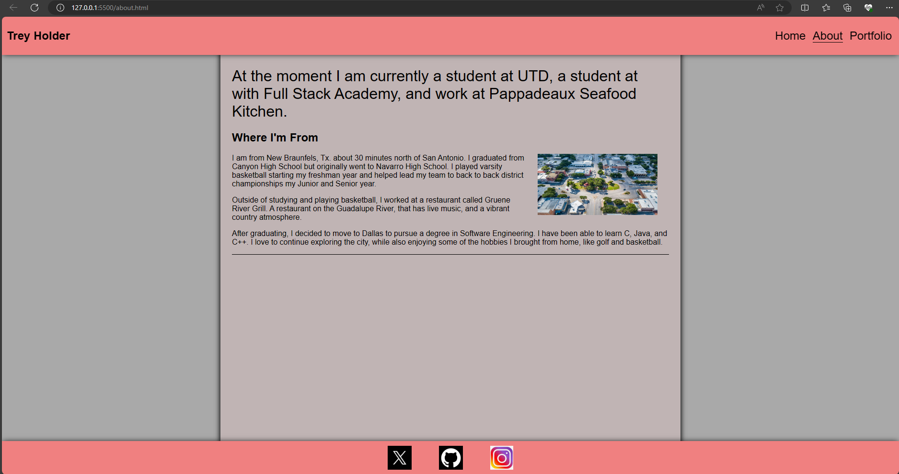

Things I've built:
First Project

This is the page I will be using to upload progress in my developing journey.
To begin this list, I have decided to apply this page as the foundation for my first "project". I hope to update this as I can!